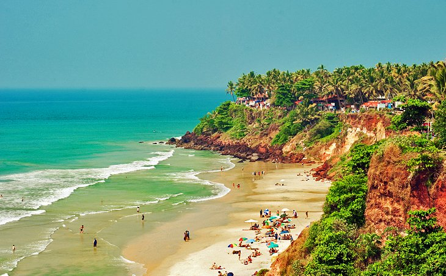

Tourist places in India
India is a lively place that is known for surprising differences where both the conventional and present day worlds meet. The world's seventh biggest country by region and the second biggest as far as populace, India flaunts a rich legacy - the consequence of hundreds of years of various societies and religions leaving their imprint. Features for explorers incorporate the chance to encounter a variety of hallowed destinations and otherworldly experiences, while nature darlings will make the most of its sun-washed shorelines, lavish national stops, and energizing untamed life havens. From the magnificent Taj Mahal in Agra to the holy sites of Harmandir Sahib (formerly the Golden Temple) in Amritsar and the Mecca Masjid mosque in Hyderabad, guests to this outlandish nation will find a trove of otherworldly, social, and recorded fortunes
1. The Taj Mahal, Agra

Perhaps India's most recognizable building, the Taj Mahal is likewise the world's most well known declaration to the intensity of affection. Named after Mumtaz Mahal, the most loved spouse of Emperor Shah Jahan, this most delightful of catacombs was started upon her demise in 1631 and took 20,000 laborers 22 years to finish. Consolidating numerous components of Islamic plan including curves, minarets, an onion-molded arch, and dark calligraphy trimmed around the passageway, the Taj Mahal is generally developed of white marble enriched with fragile decorated botanical examples and valuable and semi-valuable stones, for example, jade, lapis lazuli, precious stones, and mother of pearl. Hot Tip: The best time to visit is either at sunrise or nightfall when the air is splendidly adjusted by the adjustment in lighting (if conceivable, attempt to get a perspective on the Taj Mahal's appearance from the most distant bank of the Yamuna River).
Address: 64 Taj Road, Agra-282001
Official site: www.tajmagal.gov.in
Accommodation: Where to Stay in Agra
2. Sri Harmandir Sahib: The Golden Temple of Amritsar

Established in 1577 by Sri Guru Ram Das ji, Amritsar is a significant center of Sikh history and culture. The primary fascination here is Harmandir Sahib, opened in 1604 and still regularly alluded to as the Golden Temple for its wonderful gold improvement. The holiest of India's numerous Sikh holy places (it additionally draws in numerous Hindus and individuals of different beliefs), the sanctuary was worked in a mix of Hindu and Islamic styles, its lower marble area highlighting such twists as lavish trimmed botanical and creature themes, while the enormous brilliant arch speaks to a lotus blossom, an image of virtue to Sikhs. Notwithstanding its breathtaking plan, guests are similarly intrigued with the sanctuary's profound environment, an effect enhanced by the prayers continuously chanted from Sri Guru Granth Sahib ji and broadcast throughout the complex.
Address: Golden Temple Road, Amritsar, Punjab 143006
Accommodation: Where to Stay in Amritsar
3. The Holy City of Varanasi

A noteworthy journey place for Hindus, the heavenly city of Varanasi has for quite some time been related with the forceful Ganges River, one of the confidence's most significant religious images. Going back to the eighth century BC, Varanasi is one of the most established still possessed urban communities on the planet. It offers numerous motivations to visit, not least of them the opportunity to investigate the Old Quarter nearby the Ganges where you'll discover the Kashi Vishwanath Temple, worked in 1780 (the New Vishwanath Temple with its seven separate sanctuaries is additionally of premium). Washing in the Ganges is critical to Hindus, and various areas known as "ghats" include stairways prompting the water where the loyal wash before petitions. On the whole, Varanasi flaunts in excess of 100 ghats, the biggest being Dasashvamedh Ghat and Assi Ghat (the last mentioned, at the conjunction of the Ganges and Asi streams, is viewed as especially sacred). Additionally worth seeing is Banaras Hindu University, built up in 1917 and noted for its gigantic library with in excess of a million books, and the magnificent Bharat Kala Bhavan historical center including fine accumulations of smaller than usual works of art, figures, palm-leaf original copies, and neighborhood history shows
Accommodation: Where to Stay in Varanasi
4. The Golden City: Jaisalmer
 Where to stay in Jaisalmer
Where to stay in JaisalmerSo named for the yellow sandstone utilized in the greater part of its structures, the Golden City of Jaisalmer is a desert garden of marvelous old design that ascents from the sand hills of the Thar Desert. When a vital station, today the city is loaded up with amazing old chateaus, wonderful entryways, and the huge Jaisalmer Fort - otherwise called the Golden Fort - an overwhelming twelfth century structure that ascents high above town. Notwithstanding its royal residences, sanctuaries, and fine old homes, the stronghold flaunts 99 bastions alongside enormous doors prompting its fundamental yard where you'll locate the seven-story-tall Maharaja's Palace. Begun in the mid 1500s and added to by progressive rulers until the nineteenth century, the castle offers segments open to the open incorporating zones wonderfully enriched with tiles from Italy and China and unpredictably cut stone entryways just as various Jain sanctuaries dating from the twelfth to sixteenth hundreds of years, each adorned with fine marble and sandstone pictures, palm-leaf original copies, and brilliantly painted roofs. Make certain to likewise look at the well-protected 1,000-year-old library, Gyan Bhandar, with its numerous sixteenth century original copies and artifacts.
5. The Red Fort, New Delhi

Built by Shah Jahan in 1648 as the seat of Mughal power - a role it maintained until 1857 - the magnificent crescent-shaped Red Fort in New Delhi, named after the stunning red sandstone used in its construction, covers a vast area of more than two square kilometers, all of it surrounded by a large moat. Highlights include its two largest gates: the impressive Lahore Gate (the fort's main entrance) and the elaborately decorated Delhi Gate, once used by the emperor for ceremonial processions. A fun part of a visit is exploring Chatta Chowk, a 17th-century covered bazaar selling everything from jewelry to silk garments, as well as souvenirs and food items. While you can explore the fort yourself, guided tours are offered and provide a fascinating insight into the life and times of the Shah, including a peek into the stunning white marble Hall of Public Audiences (Diwan-i-Am) where he received his subjects. Hot Tip: Try to stick around for the sound and light show held each evening featuring important events in the fort's history
Address: Netaji Subhash Marg, Chandni Chowk, New Delhi, Delhi 110006
Accommodation: Where to Stay in New Delhi
6. The Gateway of India, Mumbai

Standing a great 26 meters tall and overlooking the Arabian Sea, the notorious Gateway of India is an absolute necessity see when in Mumbai. Worked to honor the landing of King George V and his significant other Queen Mary in 1911, this dazzling bit of engineering was opened with much grandeur and function in 1924 and was, for some time, the tallest structure in the city. Developed totally of yellow basalt and concrete and striking for its Indo-Saracenic plan, the Gateway of India was additionally the area of a somewhat less blissful parade of British fighters in 1948 when India picked up its autonomy. Nowadays, the colossal passage gives a staggering scenery that is as well known among local people as it is voyagers. Hot Tip: After visiting the Gateway of India, fly over to the contiguous Taj Mahal Palace and Tower for a tasty High Tea, a custom since this dazzling lavish inn opened in 1903.
Accommodation: Where to Stay in Mumbai
7. Mecca Masjid, Hyderabad

Development of Hyderabad's Mecca Masjid, one of the world's biggest mosques (and one of the most established in India) started in 1614 during Mohammed Quli Qutub Shah's rule and took just about 80 years to finish. Huge enough to suit 10,000 admirers, this excellent mosque's 15 tremendous curves and columns were each fashioned from single chunks of dark stone hauled to the site by gigantic cows prepares supposedly comprising of up to 1,400 bulls. Taking its name from the blocks over the focal door that were brought here from Mecca, this great complex highlights features, for example, its principle entryway, tremendous court, an enormous artificial lake, and a room that houses the hair of Prophet Mohammed. Other striking highlights incorporate engravings from the Quran above a considerable lot of the curves and entryways, the perfect top of the fundamental corridor, the cornices around the whole mosque structure, and the flower themes and friezes over the curves.
Address:Hyderabad, Telangana 500002
Accommodation: Where to Stay in Hyderabad
8. Amer Fort, Jaipur

Amer Fort (frequently additionally spelt "Golden") was worked as an invigorated castle in 1592 by Maharaja Man Singh I and has since quite a while ago filled in as the capital of Jaipur. Cut high up into the slope, the fortification is open by walking by means of a precarious trip or by transport rides from the town underneath (even better, let an elephant take every necessary step). Features incorporate Jaleb Chowk, the principal patio, with its many designed elephants, and the Shila Devi Temple, devoted to the goddess of war. Additionally of note is the bordering Hall of Public Audience (Diwan-I-Am) with its finely improved dividers and porches frequented by monkeys. Different features incorporate Sukh Niwas (the Hall of Pleasure) with its numerous flowerbeds and a channel once used to convey cooling water, and the Temple of Victory (Jai Mandir), prominent for its numerous embellishing boards, bright roofs, and incredible perspectives over the castle and the lake underneath. Simply above Amer Fort is Jaigarh Fort, worked in 1726 by Jai Singh and including tall post towers, considerable dividers, and the world's biggest wheeled gun. Make sure to likewise invest energy meandering the walled Old City of Jaipur with its three completely reestablished doors and wonderful bazaars, just as the awesome City Palace, an enormous complex of patios, plant enclosures, and structures
9. The Beaches of Goa
Long referred to inside India as the "go-to" goal for those looking for an incredible shoreline occasion, Goa's excellent western coastline, ignoring the Middle Eastern Ocean, has as of late been found by sightseers from abroad. Goa's in excess of 60 miles of wonderful coastline is home to a portion of the world's loveliest shorelines, each with their own specific intrigue. For those searching for harmony and calm, separated Agonda Shoreline is a decent decision, while Calangute Shoreline is by a long shot the most business and swarmed. For those looking for luxurious hotels, yoga excursions, and spa relaxes, the shorelines of Mandrem, Morjim, and Ashwem are popular among well off Indians and Westerners alike. Palolem is another prominent alternative in a wonderful setting. While in Goa, make sure to visit the Bhagwan Mahavir Natural life Asylum, home to thick backwoods and a lot of fauna, including deer, monkeys, elephants, panthers, tigers, and dark jaguars - just as India's renowned lord cobras - and somewhere in the range of 200 types of flying creatures. Likewise worth a visit is Divar Island, gotten to by ship from Old Goa. Features incorporate Piedade, a regular Goan town and home to the Congregation of Our Woman of Empathy with its intriguing stucco work, Rococo mortar adornments, and special raised areas, just as shocking perspectives on the encompassing field.
Accommodation: Where to Stay in Goa
10. Periyar National Park and Wildlife Sanctuary, Madurai

One of South India's most popular tourist attractions, Periyar National Park and Wildlife Sanctuary is centered around a lake built by British engineers in 1895 for irrigation and to provide water to the city of Madurai. Established in 1934, this beautiful park is home to numerous species of mammals, including a large free-roaming Indian elephant population, wild boar, otters, the lion-tailed macaque, and more than 20 Bengal tigers. Bird watching is a popular activity with frequent sightings of species such as darters, storks, kingfishers, hornbills, and racket-tailed drongos, along with many interesting varieties of butterflies. The best ways to enjoy the park's splendid mountain scenery are to take a lake cruise or guided jungle walk, the latter allowing visitors a chance to come face to face with elephant herds and observe other wildlife from watchtowers and viewing platforms. Hot Tip: Be sure to stop at one of the many nearby spice, tea, or coffee plantations for a tour
11.Agra Fort

Worked as a military structure in 1565 by Head Akbar with later augmentations by Shah Jahan, the shocking Agra Post (otherwise called Agra's Red Fortress) is an intriguing blend of both Hindu and Muslim impacts. Somewhat more than two kilometers from the Taj Mahal, the stronghold is entered through Amar Singh Door with its low external divider and dogleg configuration worked to befuddle assailants. Once inside, you'll see two enormous interlinked sandstone structures, Akbari Mahal and Jahangiri Mahal, the biggest private living arrangement in the complex. Different features incorporate the Khas Mahal (Private Royal residence), with its mind blowing copper rooftop, and the Anguri Bagh (Grape Greenhouse), a jigsaw-designed Mughal garden with various magnificent wellsprings and water channels just as screens that once offered a private region for the sovereign and his company. Additionally of note is the octagonal Musamman Burj tower, which later filled in as Shah Jahan's jail until his demise
Address:Rakabganj, Agra, Uttar Pradesh 282003
12. The Ellora Caves, Aurangabad

The famous monumental Ellora Caves were built between the 5th and 10th centuries by Buddhist, Jain, and Hindu monks, and make for an excellent excursion from Mumbai, nearly 300 kilometers toward the west. Presently an UNESCO World Legacy Site, this surprising accumulation of 34 cut cloisters, houses of prayer, and sanctuaries - 12 of them Buddhist, 17 Hindu, and five having a place with the Jain confidence - were worked in nearness to one another, an impression of the religious resistance that existed during this time of Indian history. Of the Buddhist religious community caverns, features incorporate various sanctums including carvings of Buddha and holy people dating from the fifth to seventh hundreds of years, just as the dazzling Craftsman's Cavern, considered one of the best in India. The Hindu caverns are significantly more intricate and were cut starting from the top, so framework was a bit much. Of these, the best is the Kailasa Sanctuary, a gigantic shake cut sanctuary speaking to Mount Kailasa and requiring the evacuation of 200,000 tons of shake.
13. Mehrangarh Fort, Jodhpur

Dominating the old city of Jodhpur, the gigantic Mehrangarh Stronghold, probably the biggest fortress in India, was worked in the fifteenth century to shield the general population of the popular "Blue City," as Jodhpur is as yet known (it's so named for its indigo hued houses, painted blue to redirect the warmth). Based over a transcending outcrop, Mehrangarh is an astounding accomplishment of development, its monstrous dividers everything except impervious. Access is by means of one of seven awe inspiring doors, including Jaya Pol and Fateh Pol (the last still bears scars from gun assaults). Features of a visit incorporate investigating the fortress' entrancing system of patios and castles, just as a gallery lodging an impressive gathering of relics identified with the Maharajas. Make certain to invest energy in the notable focus of Jodhpur itself, well known for its eight city entryways, a beautiful old clock tower, and various bazaars selling everything from vegetables to desserts, flavors, and crafted works
Address:Fort Road, Jodhpur, Rajasthan 342006
14. Mysore Palace

The rambling city of Mysore is a joy to investigate on account of its varied blend of fine old frontier engineering; glorious Indian royal residences; and lavish, well-manicured gardens. While those slanted towards shopping will appreciate investing energy in the city's well known silk and sandalwood bazaars, the primary fascination is radiant Mysore Royal residence. Totally reconstructed in 1897 after a staggering fire, this lovely three-storied royal residence highlights features, for example, its rich square towers and vaults; the numerous fancy roofs and columns in Durbar Lobby; and the awesome Marriage Structure, with its coated floor tiles, shocking recolored glass, works of art, and showcases of adornments (it's additionally where, on exceptional events, the stunning Brilliant Royal position is shown). For a genuine treat, make sure to get one of the magnificent light shows held every Sunday and during occasions when the castle is lit up by in excess of 90,000 lights. Hot Tip: A fun method to investigate the royal residence's huge grounds and gardens is as a component of a cycle visit, accessible free once inside.
Address: Sayyaji Rao Road, Mysuru, Karnataka 570001
Official site: www.mysorepalace.gov.in
15. Mahabodhi Temple, Bodhgaya

Bodhgaya, thought about the world's holiest Buddhist site, pulls in a large number of guests every year, all attracted to take part with the inhabitant priests in contemplation and petition. The point of convergence of this spot of journey is shocking Mahabodhi Sanctuary, worked alongside the very spot where Buddha came to Edification and figured his way of thinking on life. Built in the sixth century and reestablished various occasions since, the sanctuary is topped with a lovely pyramidal tower and houses an enormous overlaid statue of Buddha. Additionally of intrigue is the site's pipal tree, a relative of the first bodhi tree where Buddha reflected for seven days after the Edification, said to be among the most seasoned and most revered trees on the planet (you'll realize you've discovered it when you recognize the red sandstone piece denoting the spot)
Address:Bodhgaya, Bihar 824231